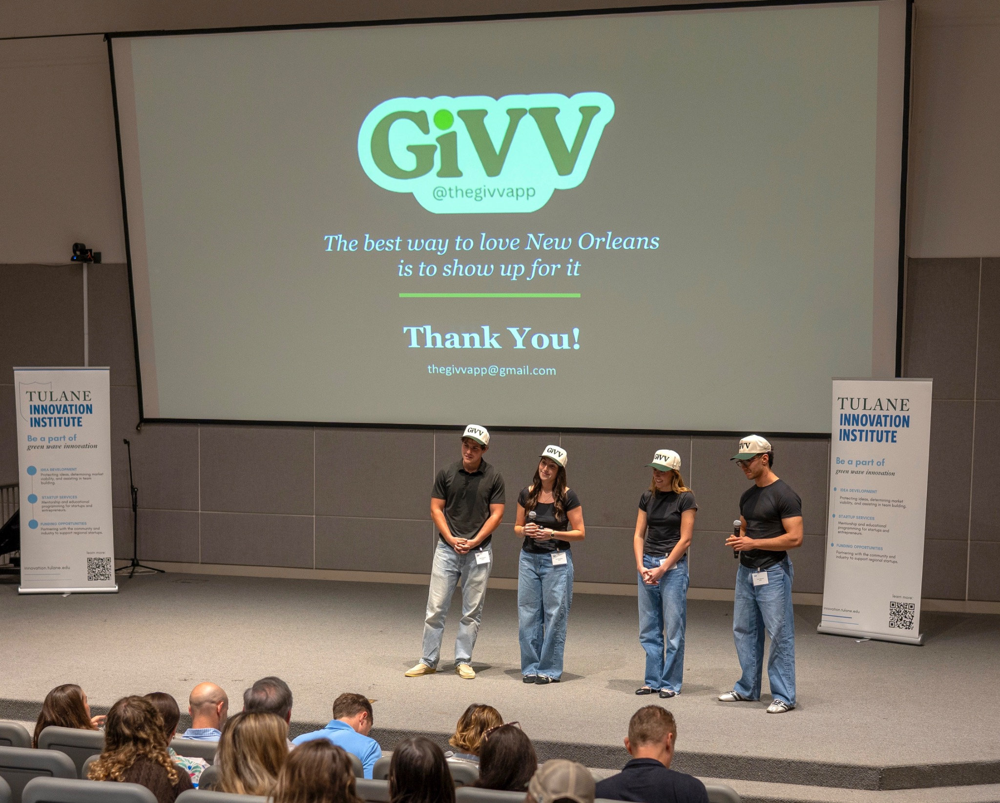

01 / GiVV · Co-founder & COO
Giving feels different when it’s personal.
How our team made local philanthropy feel more accessible to college students—and took the idea from research to a first-place pitch.

The idea
Show up for the places that shape us.
GiVV is a social marketplace concept connecting Tulane students with local nonprofits through micro-donations, social sharing, and student-organization competitions. We wanted to make giving easy to start and meaningful enough to keep doing.
In 15+ interviews, students told us about limited funds, questions of trust, and the fatigue of deciding where to give. Personal connection and seeing friends participate made a difference. Those insights shaped our approach.
My contribution
Building the work behind the pitch.
As co-founder and COO, I led operations throughout our semester-long startup incubator, contributed to strategy and user research, and developed the social media strategy and content. My teammates and I built and presented the concept together.
On April 28, 2026, GiVV placed first in Tulane’s Strategy Start-Up Lab final pitch competition and earned a $15,000 award. It was a proof point for the idea—and for what a committed team can do in one semester.